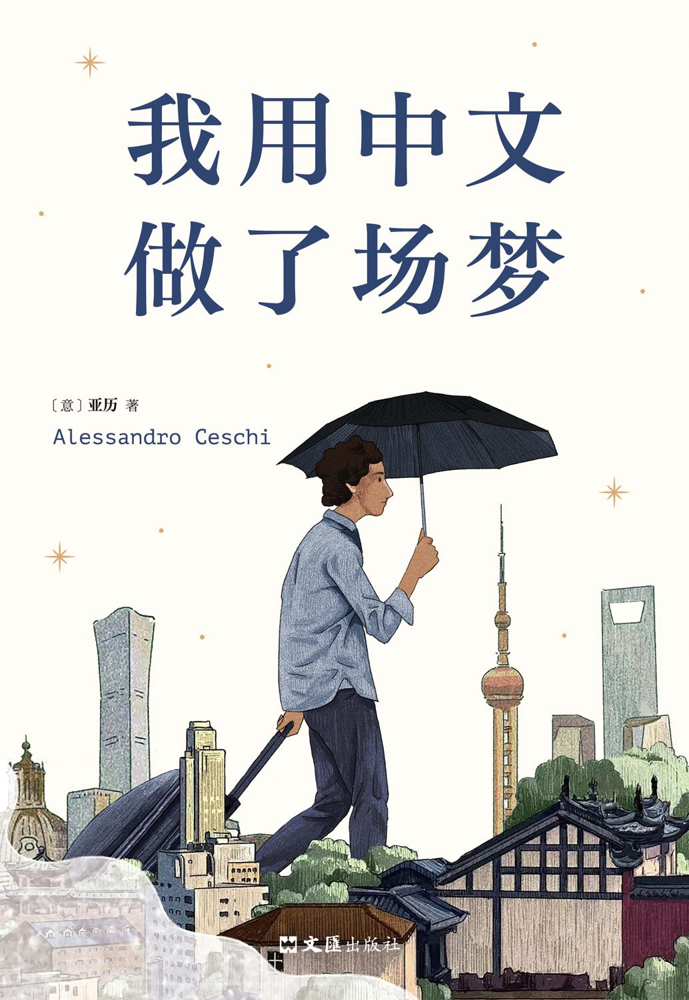

《我用中文做了场梦》

总体观点
语言不仅是交流的工具，更是重塑主体感知与重构精神世界的第二生命：当一个欧洲青年放下母语的优越感与概念预设，彻底沉浸在由汉字搭建的表意空间中，他发现了一种摆脱既定身份羁绊、重新认识自我与世界的新器官。
拒绝‘老外猎奇’与宏大文明对话的刻板套路，以绝对诚恳、笨拙且平视的‘过日子’姿态扎进中国社会的肌理：从北京群演现场、广州外贸商行到四川乡间宴席，在具体的市井烟火与市井小人物身上打捞被时代洪流冲刷的个体尊严与脆弱。
漂泊者的‘世界公民’困境与归属悖论：异乡生活的梦幻感与突如其来的现实断裂交织，揭示出现代人在全球化浪潮中既渴望无拘游荡又无法摆脱乡愁与孤岛感的普遍生存处境。
核心观点
-
1. 用非母语写作的‘陌生化’解放：重塑心智与观察世界的新器官
母语往往承载了太多未经审视的文化成见与表达惯性；而用后天习得的中文写作，迫使作者以孩童般专注澄澈的目光凝视每一个词汇与物象，激发出罕见的文字张力。
亚历在写作中放弃冗长的从句修饰，以短促精悍的中文主谓短句描摹北京冬日的干冷阳光与热气腾腾的包子铺，呈现出极具诗意质感的白描力量。 -
2. 拒斥‘景观化老外’标签：从特权幻觉回归柴米油盐的凡俗日常
很多在华外籍人士容易沉溺于留学生圈层或外企外教的优越特权泡泡中；亚历主动刺破这种虚妄，拒绝成为被猎奇打量或配合表演的文化吉祥物，执意过一种柴米油盐的普通人生。
他拒绝各类网红孵化机构充满迎合套路的短视频签约邀请，坚持在菜市场里与大爷大妈一起挑选带泥的胡萝卜并为几毛钱讨价还价。 -
3. 群演工业中的荒诞切片：作为人肉道具的外籍面孔与底层生存
影视工业底层对外籍演员的消费极其程式化与工具化，他们被塞进不合身的西装或盔甲，扮演‘外国专家’或‘异国战俘’；这种机械表演折射出当代消费社会的荒诞底色。
在北京寒风刺骨的摄影棚里，亚历与来自五湖四海的外籍群演排队领盒饭，导演一遍遍喊着‘再来一条’，他们只需在镜头前夸张点头微笑，甚至不需要发出一句真实台词。 -
4. 重建‘附近’与具体的人：在市井褶皱中打捞微小的人性光斑
真正的跨文化理解不发生在外交宴席上，而发生在破旧弄堂与街角小店中；与具体的人建立真实的生命羁绊，才能穿透抽象意识形态的坚冰。
作者与房东唐先生多年相处，从最初警惕的租客与房东关系，逐步转变为在泛黄客厅里共饮白酒、倾听彼此人生失意与衰老焦虑的莫逆之交。 -
5. 城市空间的游牧迁徙：超级都市扩张下的原子化青年困境
在北京朝阳区的地下室、广州淘金路的城中村与上海法租界的阁楼之间辗转迁徙，外籍青年的漂泊轨迹与数以千万计的中国‘北漂’、‘沪漂’年轻人在精神内核上彻底合流。
每一次退租时看着空荡荡的房间与堆在墙角的蛇皮编织袋，那种被现代都市机器随意吞吐的无根漂浮感，击碎了国籍与肤色的所有物理分野。 -
6. 双向放逐者的‘世界公民’乡愁：在异乡成为故人，在故土成为异客
长期的异国浸润制造了无法逆转的精神混血状态：回到意大利老家后发现自己已无法适应缓慢的生活节奏与思维模式，而留在中国又时刻面对异邦人身份的终极边界。
回到意大利帕多瓦的广场上，亚历下意识地想拿出手机扫码付款并在梦中用中文低语，那一刻他深切体会到自己已成为一个无国籍的‘精神游民’。
全书思维导图 · 知识脉络树
全书结构
-
前言
交代作者告别意大利故土来到中国学习电影的初衷；阐述自己为何选择用后天习得的中文记录这段经历，点题‘用中文做梦’的奇幻与真切。
叙述初到北京时面对铺天盖地的汉字标牌犹如置身密码迷宫，而在某个清晨醒来发现自己的梦境独白居然变成了普通话的奇妙震撼。 -
上篇·第一章 来中国才是正经事
回顾在意大利面对青年高失业率与生活沉闷时的迷茫，义无反顾申请前往北京电影学院进修；记录在语言预科班初学汉语拼音与四声声调的啼笑皆非。
在大学宿舍里反复练习‘买’与‘卖’的声调差异，在食堂窗口因发音不准闹出误会，却在反复碰壁中触摸到汉语声韵的独特美感。 -
上篇·第二章 过日子的老外
描述脱离封闭的外国留学生圈子，主动搬进普通北京居民楼开启接地气的生活；学会社区垃圾分类、交水电费、与居委会大妈打交道，体味‘过日子’的琐碎厚重。
冬天学着老北京邻居在阳台整齐码放冬贮大白菜，清晨裹着厚棉袄跟在晨练大爷身后打太极拳，打破‘洋人’与社区的无形隔阂。 -
上篇·第三章 再来一条
巨细靡遗揭秘北京底层影视圈‘外籍群演中介’的地下生态；描摹为了赚取生活费在各类低成本广告与抗战神剧剧组辗转充当背景人肉背景板的荒诞见闻。
在零下十度的野外片场套上一件满是油污的假皮草扮演‘外国使节’，在导演一声声愤怒的‘卡，再来一条’中冻得瑟瑟发抖却苦中作乐。 -
上篇·第四章 北京，北京
漫游于北方超级都市的辽阔骨架与市井褶皱之间；对比长安街的雄浑宏大与二环内胡同鸽哨的悠远静谧，捕捉北京在急速现代化进程中尚未风干的历史余温。
黄昏时分骑着一辆二手自行车穿越夕阳下的景山后街，耳边飘过胡同大爷提着鸟笼的闲聊，体会北方大城独有的粗犷与包容。 -
上篇·第五章 坐后排
以城市出租车后座作为绝佳的流动观察哨所；从司机的方言广播、滔滔不绝的国家大事闲聊以及后视镜里的眼神交汇中，窥见当代中国社会最鲜活的众生相。
一位开了三十年出租车的老司机在堵车的环路上从国际地缘政治一直聊到儿子买房的重负，后座的外国青年在沉默聆听中触碰到底层的真实焦虑。 -
下篇·第六章 和人交流
探讨超越字词语法层面的深度人际沟通；剖析中国文化中讲究的含蓄、客套与弦外之音，展现一个外国人在碰壁摸索中体会‘心领神会’的默契境界。
在饭桌上初遇热情敬酒与相互争抢买单的中国式社交礼仪，从起初的错愕抗拒到后来熟练学会用双手合十与温情话术化解尴尬。 -
下篇·第七章 海边的老师
离开北方大城南下广东沿海小镇；在潮湿的海风与骑楼老街中结识一位博学而隐逸的民间长者，在品茶论道中接受关于东方哲学与生命从容的深刻启蒙。
在海边简陋的茶室里，老人用功夫茶滚烫的沸水冲泡单丛，教作者如何感受‘苦尽甘来’四个汉字所蕴含的生命韧性。 -
下篇·第八章 外籍群演大酒店
探访并记录聚集了大量跨国流浪群演与过气模特的廉价经济型连锁酒店；刻画来自东欧、南美、非洲各色漂泊者在淘金梦碎与苟延残喘之间的群像生态。
深夜酒店大堂里，几个来自不同大陆的青年就着花生米喝着廉价啤酒，用各自蹩脚的普通话交流明天哪个通告能现结两百块现金。 -
下篇·第九章 何处才是家？
在一次次拖着行李箱搬家退租的颠簸中，深度反思空间的物理属性与心灵居所的分离；探讨在全球流动时代，何谓归属感与真正的安身立命之所。
面对意大利母亲在长途视频中反复追问‘你到底什么时候回老家稳定下来’，作者看着窗外陌生的中国霓虹陷入漫长而复杂的沉默。 -
下篇·第十章 花园坊的春天
辗转迁居上海，漫步于法租界梧桐树影下的老洋房与创意园区；记录江南细雨中都市文艺青年的精致浪漫，以及繁华表象下隐秘滋生的虚无与疏离感。
在武康路街角看着排队拍照打卡的名媛与街拍客，与身边推着小车叫卖酒酿圆子的老阿婆形成鲜明对照，记录上海极致折叠的摩登面相。 -
下篇·第十一章 流动中的人
登上漫长的高铁与绿皮火车，穿行于华北平原与西南崇山峻岭之间；在拥挤的车厢中直面大批返乡农民工、求职学生与推销小贩，触摸中国内陆跳动的强韧脉搏。
在通宵硬座车厢里，一位带着大包被褥的大叔主动掰下半个刚煮好的玉米递给作者，异乡人在陌生人的朴素善意中热泪盈眶。 -
下篇·第十二章 过年
受邀深入四川乡村体验原汁原味的中国传统农历新年；在杀年猪、放鞭炮、摆长桌宴与通宵守岁的宗族仪式中，领略血缘亲情所构筑的强大精神庇护所。
坐在川西农家院落火盆旁与一大家子素不相识的乡亲围坐在一起包饺子，热气腾腾中体验到母国早已消逝的乡土熟人社会温情。 -
下篇·第十三章 唐先生的故事
以深沉而细腻的笔触为生命中最重要的中国忘年交——老房东唐先生立传；记录这位经历过时代动荡、下岗再就业的老人平凡而充满尊严的晚年生命轨迹。
唐先生在老旧居所里用颤抖的手擦拭过去的黑白老照片，向作者讲述几十年前的工厂往事，两位跨越半个世纪与万里重洋的灵魂在此刻深深共鸣。 -
后记：世界公民 与 致谢
回望这六年在华岁月如同一场瑰丽而真实的梦境；在疫情时代降临后的骤然离别中，总结作为‘世界公民’的清醒与坦然，致谢所有在梦境中相遇的普通人。
飞机冲上云霄离开北京上空时，作者在笔记本上写下最后的中文告别：我虽已离开，但这门语言已永恒地雕刻了我的灵魂。